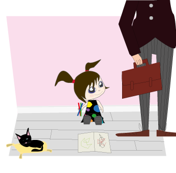

Emma bor tillsammans med sin mamma och pappa i ett fint hus där det alltid är sommar.
Emmas mamma jobbar på café och brukar ge Emma en kaka då och då.
Vad Emmas pappa jobbar med vet Emma inte riktigt. Han brukar mest gå runt i fina byxor och en portfölj. Han är inte ofta hemma, men när han kommer tillbaka har han alltid med en fin present åt Emma.